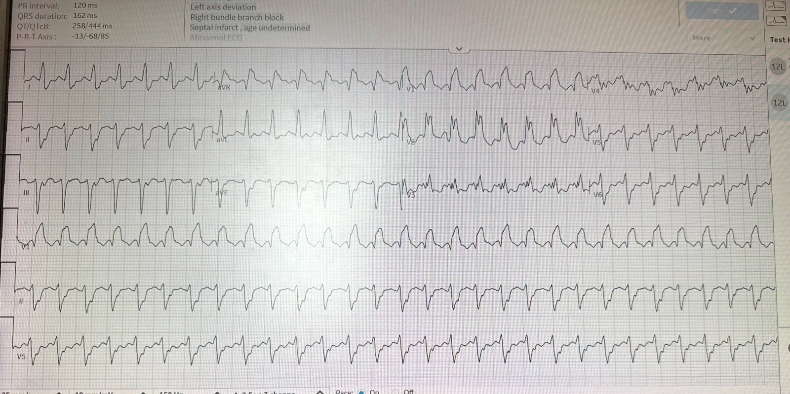
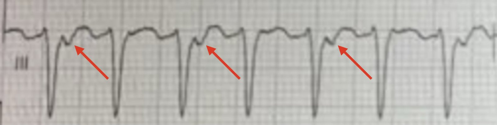
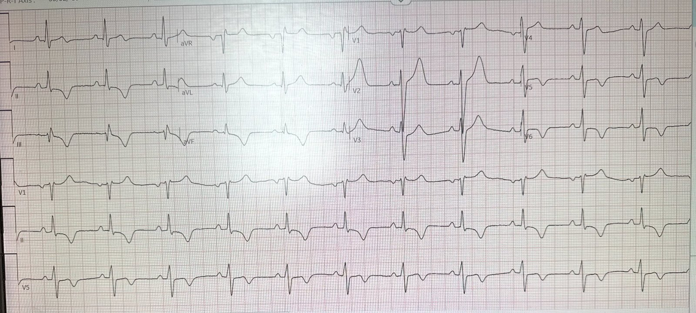
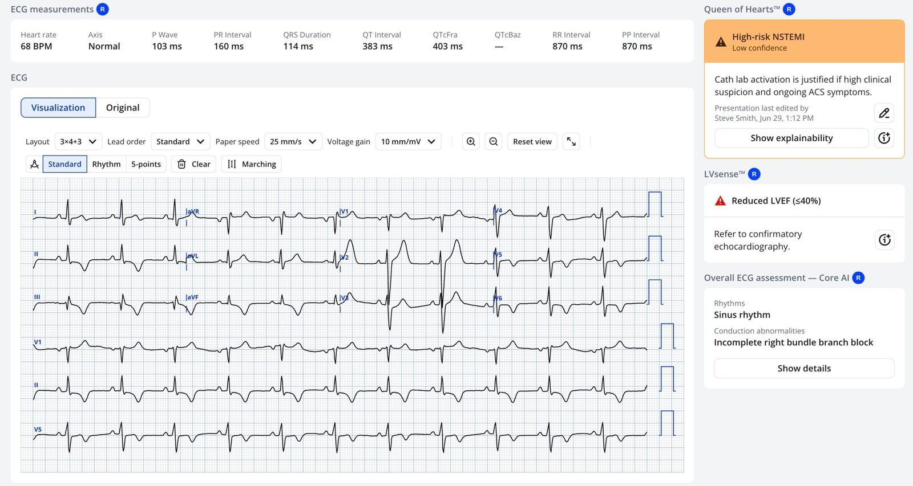
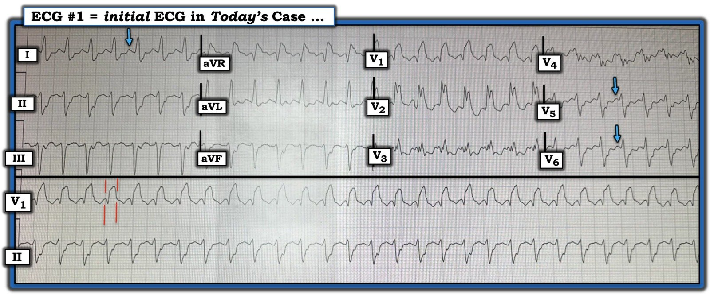
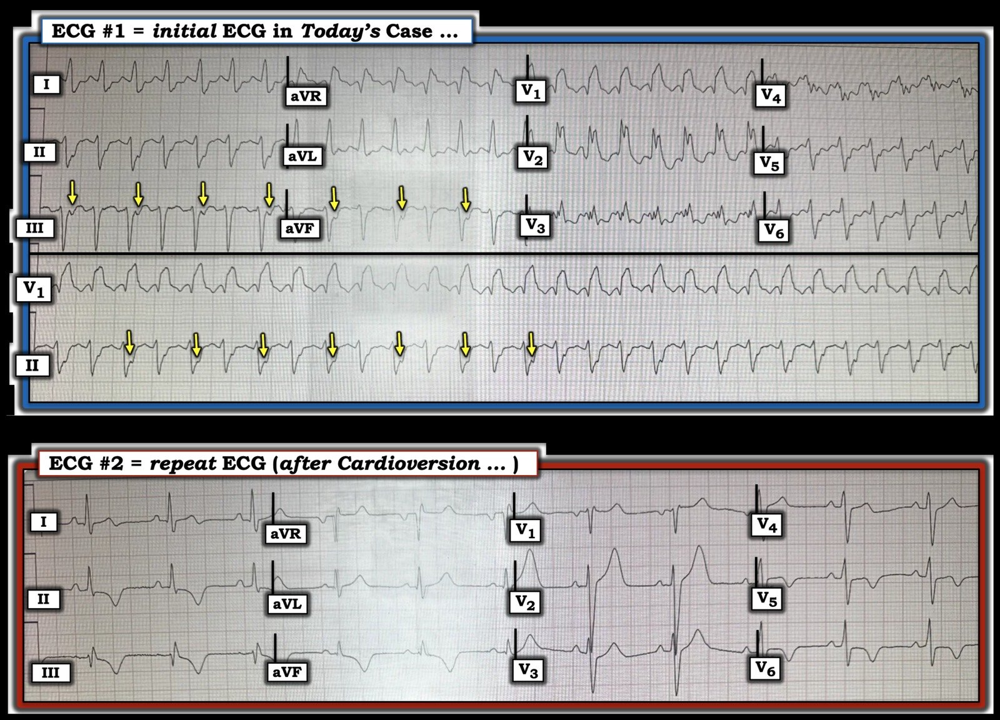
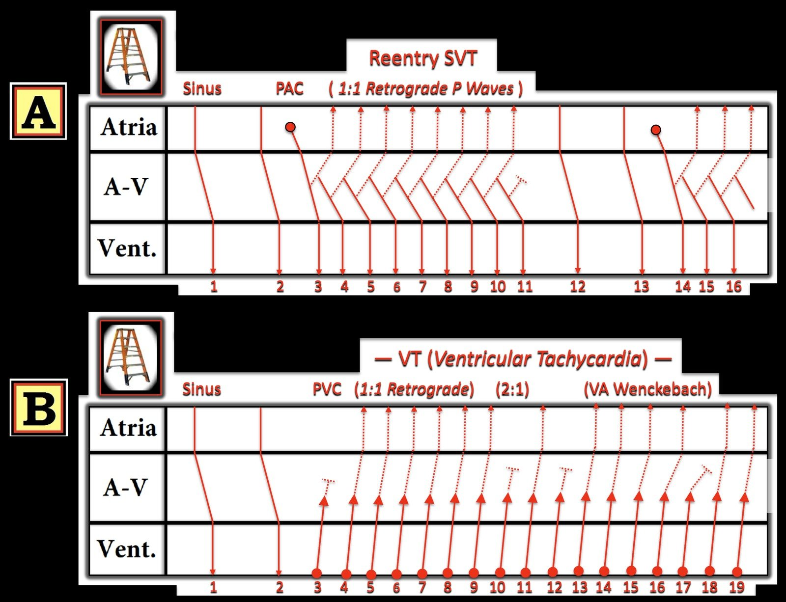

06/07/2026 — Đâu là dấu hiệu then chốt để xác lập chẩn đoán cơn nhịp nhanh QRS rộng này?
Bản dịch tiếng Việt của bài "What is the critical finding for establishing the diagnosis of this wide complex tachycardia?" – Dr. Smith’s ECG Blog. Giữ nguyên toàn bộ 7 hình ảnh của bản gốc.
Ca này do một cựu bác sĩ nội trú gửi cho tôi:
Một bệnh nhân 38 tuổi, tiền sử chỉ có tăng huyết áp và béo phì, đến khám vì chóng mặt, chướng bụng và chuột rút ở chân trong một tuần. Lúc phân loại, bệnh nhân tụt huyết áp và nhịp tim nhanh, nên được ghi điện tâm đồ:


Nhịp nhanh QRS rộng (WCT) đều, tần số 174, hình dạng RBBB và LAFB.
Chuyển đạo II và V1 có những gì có thể là sóng P trước mỗi QRS, nên tôi không chắc đây là nhịp nhanh xoang kèm RBBB và LAFB, SVT kèm dẫn truyền lệch hướng, hay nhịp nhanh thất (VT).
Bạn nghĩ sao?
= = =
= = =
Smith: Điều chống lại VT là: Có thể có sóng P trước mỗi QRS? Khoảng RS ở nhiều chuyển đạo < 100ms (=~80ms hoặc thậm chí ngắn hơn).
Cuối cùng: khi có hình dạng RBBB + LAFB, một rối loạn nhịp nhanh rất có thể là “VT phân nhánh sau” (posterior fascicular VT); vì khởi phát từ phân nhánh sau nên nó có hình dạng RBBB + LAFB. Loại VT này thường đi kèm chức năng thất trái tốt, nên người ta kỳ vọng EF tốt.
Các đặc điểm của VT gồm sóng Q rộng ở aVR, thời gian >40 ms; R’>R ở V2, không có sóng r nhỏ ở khởi đầu QRS ở V1.
Dấu hiệu chẩn đoán! Ngoài ra, nhờ con mắt tinh tường của Ken Grauer (xem phần giải thích đầy đủ của ông với các mũi tên vàng bên dưới): dường như có sóng P ngược dòng ở chuyển đạo II. Như vậy, đây là một rối loạn nhịp nhanh, nhưng ta vẫn chưa biết đó là SVT kèm dẫn truyền lệch hướng hay VT. Ken giải thích bên dưới vì sao nó phải là VT.
Frick: Khi xem lại, tôi nghĩ có dẫn truyền thất-nhĩ (VA) 2:1, điều này cũng có giá trị chẩn đoán VT (số nhát thất nhiều hơn số nhát nhĩ). Đặc biệt ở chuyển đạo III, có thể thấy một hình ảnh luân phiên. Đây có thể là điện thế luân phiên đơn thuần, nhưng tôi nghĩ nhiều khả năng hơn là dẫn truyền VA 2:1. Điều này được trình bày bên dưới.


Ngoài lề: Nếu bạn không nhận ra dấu hiệu chẩn đoán này và vẫn nghĩ có thể là nhịp nhanh xoang, thì bạn có thể chú ý kỹ đến biến thiên tần số tim (nếu tần số thay đổi theo từng phút, rất có thể đó là nhịp xoang), và đánh giá thể tích tuần hoàn bằng siêu âm. Nếu thể tích thấp hoặc bình thường, và không có đường B, hãy thử truyền dịch và xem tần số tim thay đổi thế nào. Tôi không biết những điều đó có được thử hay không.
Các bác sĩ điều trị nghĩ đây là SVT và đã thử adenosine nhưng không thành công. Sau đó họ nghĩ có thể là nhịp nhanh thất, nên đã sốc điện chuyển nhịp 360 J 3 lần, và nhịp chuyển được ở lần thứ 3. Đây là điện tâm đồ sau sốc điện chuyển nhịp:


Rõ ràng nhịp đã chuyển, điều này loại trừ nhịp nhanh xoang. SVT hoặc VT, kể cả VT phân nhánh, đều vẫn có thể.
EF trên siêu âm tại giường sau sốc điện chuyển nhịp giảm mức độ vừa.
Tôi không thấy bằng chứng rõ của hội chứng vành cấp (ACS) trên điện tâm đồ này. Đây là ý kiến của Queen:


Lưu ý PMCardio cũng cho biết EF <40%, điều này đã được siêu âm tại giường xác nhận.
Phản hồi của tôi với kết quả đọc của Queen: “Cô ấy nghĩ đây là một OMI đã tái tưới máu. Có lẽ vì sóng T đảo ngược ở thành dưới và thành bên. Điều đó có thể. Tôi nghi ngờ điều đó.” Nói cách khác, tôi không nghĩ đây là một ca nhồi máu cơ tim cấp hay OMI.
Frick: Sóng T đảo ngược nhiều khả năng là do “sóng T trí nhớ” (memory T waves). Tóm lại, khi một bệnh nhân có khử cực bất thường (ví dụ LBBB, tạo nhịp thất, hoặc trong ca này là VT) được cải thiện dẫn truyền (ví dụ hết LBBB, ngừng tạo nhịp, hoặc sốc điện chuyển nhịp VT), tim vẫn “nhớ” sự bất thường đó và duy trì tái cực bất thường trong một khoảng thời gian (từ vài phút đến vài tuần).
Bệnh nhân được chụp mạch vành và các động mạch vành sạch.
Bác sĩ điện sinh lý cho rằng đây là VT phân nhánh sau và sẽ sớm triệt đốt. EF hiện là 45%.
Bình luận cuối cùng của tôi gửi người gửi ca: “VT phân nhánh là hợp lý. EF thấp khi đó có thể là do bệnh cơ tim do nhịp nhanh (TiCM), vì bệnh nhân có lẽ đã ở trong nhịp này một thời gian kéo dài.” Chỉ cần một tuần ở tần số tim này là đủ để xuất hiện bệnh cơ tim do nhịp nhanh.
Nếu chẩn đoán VT phân nhánh sau đã được xác lập chắc chắn, thì verapamil rất hiệu quả. Tôi sẽ KHÔNG dùng verapamil trong ca này vì EF không bình thường. Hai lý do: 1) điều này làm tăng khả năng đây là VT thông thường hơn và 2) verapamil có tác dụng mạnh lên sức co bóp cơ tim nên có thể dẫn đến sốc. Điện là điều trị tốt nhất ở đây.
Xem bài viết tuyệt vời này của Pendell: Idiopathic Ventricular Tachycardias for the EM Physician
= = =
==================================
BÌNH LUẬN CỦA TÔI, bởi KEN GRAUER, MD (4/7/2026):
Phân biệt VT với một dạng SVT nào đó kèm dẫn truyền lệch hướng liên quan tần số hoặc blốc nhánh có sẵn từ trước — là một bài toán muôn thuở với những người làm cấp cứu. Thử thách mà ca hôm nay đặt ra cho chúng ta thêm một ví dụ nữa về việc ra quyết định cấp tính khó khăn đến mức nào trong tình huống đe dọa tính mạng này.
- Tôi đã nhiều lần trình bày “Quan điểm của tôi” về việc phân biệt VT với một dạng SVT nào đó kèm dẫn truyền lệch hướng liên quan tần số hoặc blốc nhánh có sẵn từ trước trong phần Bình luận của tôi ở cuối các trang của Dr. Smith’s ECG Blog.
- Với bạn đọc muốn có một số ca để luyện tập — tôi đề nghị xem Bình luận của tôi trong bài ngày 5 tháng Năm năm 2020 — bài ngày 23 tháng Sáu năm 2023 — và/hoặc bài ngày 9 tháng Ba năm 2026.
- Có thể tìm thêm các ví dụ luyện tập trong bài ngày 13 tháng Tám năm 2020 — bài ngày 25 tháng Sáu năm 2020 — bài ngày 23 tháng Tư năm 2019 — và bài ngày 15 tháng Tư năm 2020, đó chỉ là vài ví dụ.
= = =
CA BỆNH hôm nay:
Điện tâm đồ ban đầu hôm nay xứng đáng được bổ sung vào danh sách các bản ghi khó nêu trên — vì tôi thấy mình cứ phân vân qua lại giữa VT và một SVT kèm hoặc dẫn truyền lệch hướng liên quan tần số hoặc blốc nhánh có sẵn từ trước. Cuối cùng tôi chọn “mặc định” (tức là, Khi còn nghi ngờ — hãy coi là VT cho đến khi chứng minh được điều ngược lại) — nhưng tôi hoàn toàn không chắc chắn.
- Và rồi tôi nhìn thấy một manh mối gần như xác nhận chẩn đoán.
= = =
Hãy XEM lại Hình 1 bên dưới, là điện tâm đồ ban đầu của ca hôm nay. Theo phần bàn luận của Dr. Smith ở trên — điện tâm đồ #1 biểu hiện những điểm sau:
- Một nhịp nhanh QRS rộng (WCT) đều (Wide-Complex Tachycardia) tần số ~175/phút, không có dấu hiệu rõ của sóng P xoang (tức là, Không có sóng P dương rõ ràng với khoảng PR cố định ở chuyển đạo II).
- Việc tìm sóng P ở các chuyển đạo khác gặp khó khăn vì tần số nhanh khiến phần cuối dương của sóng T trông giống như những gì vốn có thể bị nghĩ là sóng P ở các chuyển đạo khác (tức là, sóng P xoang ở chuyển đạo I không được cao hơn sóng P xoang ở chuyển đạo II — và nếu là nhịp xoang, ta không thể thấy sóng P ở V5,V6 lớn hơn ở chuyển đạo II — như các mũi tên XANH DƯƠNG chỉ ra trong Hình 1).
- QRS có vẻ rất rộng (tức là, 0,16 giây — như gợi ý bởi các đường ĐỎ song song trong Hình 1) — điều này nghiêng về VT.
- Nhưng hình dạng QRS có thể phù hợp với RBBB (blốc nhánh phải) + LAHB (blốc phân nhánh trái trước) — điều này, cùng với phân mảnh (tức là, khía) QRS rõ rệt ở nhiều chuyển đạo, có thể phản ánh một bệnh tim nền chưa được chẩn đoán ở bệnh nhân 38 tuổi hôm nay.
- ĐIỀU CỐT LÕI: Tôi thấy mình không thể quyết định với bất kỳ mức độ chắc chắn nào giữa VT và một dạng SVT nào đó. Tôi biết thống kê luôn nghiêng về VT là nguyên nhân thường gặp nhất của một nhịp WCT đều không có dấu hiệu rõ của sóng P xoang (và cần điều trị bệnh nhân theo hướng đó cho đến khi chứng minh được điều ngược lại). Nhưng — tôi không thể loại trừ dẫn truyền lệch hướng hoặc một blốc hai phân nhánh có sẵn từ trước với căn nguyên trên thất của cơn nhịp nhanh hôm nay.
- Nếu tìm được một điện tâm đồ cũ để so sánh, ta có thể đi đến một chẩn đoán chắc chắn hơn — nhưng không có bản ghi nào trước đó.
- Chúng ta có đủ nghi ngờ VT trong Hình 1 để tiến hành sốc điện chuyển nhịp đồng bộ làm can thiệp ban đầu không?
- Nếu tìm được một điện tâm đồ cũ để so sánh, ta có thể đi đến một chẩn đoán chắc chắn hơn — nhưng không có bản ghi nào trước đó.
= = =
Hình 1: Tôi đã tái hiện điện tâm đồ ban đầu của ca hôm nay.


= = =
— Và rồi tôi nhìn thấy manh mối quyết định …
- GỢI Ý: Nhìn kỹ Hình 1 — tuy không thấy dấu hiệu rõ của sóng P xoang, liệu có bằng chứng khác về hoạt động nhĩ trên bản ghi này không? BẠN có thấy không?
= = =
= = =
TRẢ LỜI:
Tôi tin rằng có sóng P ngược dòng trên điện tâm đồ ban đầu hôm nay (các mũi tên VÀNG trong Hình 2). Nhưng khác với dẫn truyền VA 1:1 hay gặp nhất khi có sóng P ngược dòng — ở đây ta chỉ thấy sóng P ngược dòng cách một nhát!
- Sóng P ngược dòng được nhận ra nhờ sự hiện diện nhất quán của một sóng lệch âm nhỏ xuất hiện sau QRS ở một hoặc nhiều chuyển đạo thành dưới. Trong Hình 2 — điều này thấy rõ nhất ở chuyển đạo III, nhưng cũng thấy ở chuyển đạo II và aVF dưới dạng phần cuối của QRS sâu hơn một cách nhất quán ở cách một phức bộ QRS (các mũi tên VÀNG ở chuyển đạo aVF và dải chuyển đạo II dài).
= = =
Hình 2: Các mũi tên VÀNG chỉ ra sóng P ngược dòng trên điện tâm đồ ban đầu. Bản ghi phía dưới trong Hình này là điện tâm đồ ghi lại sau sốc điện chuyển nhịp.


= = =
LƯU Ý: Trước khi đi vào bàn luận về manh mối dẫn truyền ngược dòng cách một nhát — cần nhấn mạnh rằng các bác sĩ trong ca hôm nay đã xử trí bệnh nhân đúng đắn bằng việc thận trọng thử điều trị nội khoa (Đã dùng adenosine) — nhưng khi không thành công, họ nhanh chóng chuyển hướng sang sốc điện chuyển nhịp, giúp chuyển WCT về nhịp xoang, như thấy trên điện tâm đồ ghi lại ở phía dưới Hình 2.
- Lưu ý QRS hẹp lại đáng kể ở điện tâm đồ #2 — QRS trong nhịp xoang này trông hoàn toàn không giống QRS trong cơn WCT. Ngoài ra — không còn phân mảnh nào ở điện tâm đồ #2, càng ủng hộ rằng WCT thực sự là VT bền bỉ.
- Lưu ý sóng T đảo ngược lan tỏa trên điện tâm đồ ghi lại này sau khi sốc điện chuyển nhịp thành công. Thay vì thiếu máu cục bộ — tôi nghi ngờ sóng T đảo ngược lan tỏa này nhiều khả năng nhất phản ánh hiệu ứng “trí nhớ” (thường gặp trong vài giờ đến vài ngày sau một cơn rối loạn nhịp nhanh kéo dài).
- ĐIỂM THEN CHỐT (PEARL): Không nhất thiết phải thông tim để chứng minh hiệu ứng “trí nhớ” nếu sóng T đảo ngược hết kịp thời, troponin âm tính, chức năng thất trái trở về bình thường và bệnh nhân trở lại trạng thái không triệu chứng như trước cơn loạn nhịp.
- Hóa ra bệnh nhân này đã được thông tim — và như đã nêu trong phần bàn luận của Dr. Smith ở trên, kết quả thông tim không có bệnh mạch vành. Bằng chứng cuối cùng rằng EF (phân suất tống máu) giảm của bệnh nhân này thực sự là hậu quả của (các) cơn VT bền bỉ kéo dài sẽ có được NẾU trong vài ngày đến vài tuần sau triệt đốt, EF trở về bình thường.
- LƯU Ý: Bất kỳ rối loạn nhịp nhanh bền bỉ nào cũng có thể gây giảm EF — với thời gian khởi phát bệnh cơ tim do nhịp nhanh ngắn chỉ 3 ngày! (Huizar và cs. — JACC 73(18):2328-2344, 2019 ).
= = =
Ý nghĩa của dẫn truyền ngược dòng từng lúc
Trong Hình 3 — tôi đã vẽ các giản đồ bậc thang (laddergram) lý thuyết để minh họa vì sao sự hiện diện của dẫn truyền ngược dòng từng lúc mà không làm xáo trộn tính đều của nhịp WCT gần như có giá trị chẩn đoán VT (Roig và cs. — Circulation 153(15), 2026 — và — Pilecky và cs. — Eur Heart J 7:1-2, 2023).
- Ô A (Giản đồ bậc thang phía trên trong Hình 3) — Một PAC (nhát #3) xuất hiện sau 2 nhát xoang bình thường. Nếu thời điểm “vừa đúng” — PAC này có thể khởi phát một nhịp SVT do vào lại (thường là AVNRT hoặc AVRT). Nhưng vì các nhịp SVT do vào lại phụ thuộc vào việc dẫn truyền ngược dòng liên tục (các đường chấm trong loạt SVT từ nhát #3 đến 11) — SVT do vào lại sẽ kết thúc đột ngột nếu vì bất kỳ lý do gì dẫn truyền ngược dòng thất bại (như xảy ra ở đây trong giản đồ bậc thang lý thuyết này sau nhát #11).
- Ô B (Giản đồ bậc thang phía dưới trong Hình 3) — Sau 2 nhát xoang, một loạt VT bắt đầu từ nhát #3. Tôi đã vẽ một số khả năng khác nhau cho các tỷ lệ dẫn truyền VA khác nhau. Trong Ô B cần thấy rõ rằng dù dẫn truyền VA 1:1 duy trì (như từ nhát #4 đến 9) — hay từng lúc với tỷ lệ dẫn truyền VA 2:1 (như từ nhát #9 đến 12) — hay biểu hiện dẫn truyền Wenckebach ngược dòng với RP’ kéo dài dần cho đến khi dẫn truyền ngược dòng thất bại (như xảy ra từ nhát #13 đến 17) — tính đều của nhịp VT vẫn không bị ảnh hưởng! Điều này chứng minh rằng hoạt hóa thất độc lập với hoạt động nhĩ — qua đó về cơ bản xác nhận VT bằng cách loại trừ khả năng một SVT do vào lại vốn phụ thuộc vào sự duy trì dẫn truyền ngược dòng qua một vòng vào lại.
= ==
Hình 3: Các giản đồ bậc thang lý thuyết minh họa tác động dự kiến của dẫn truyền ngược dòng từng lúc lên một SVT do vào lại so với tác động lên VT.


= = =
SUY NGHĨ CUỐI CÙNG về CA BỆNH hôm nay:
Blốc dẫn truyền ngược dòng từng lúc (dù là do Wenckebach ngược dòng hay một hiện tượng dẫn truyền VA từng lúc khác) không phải là hiện tượng thường gặp. Nhưng nó có xảy ra (như trong ca hôm nay) — và bạn có thể phát hiện được nếu chủ động tìm.
- Như thấy ở Hình 2 — việc nhịp WCT duy trì tần số thất đều bất chấp việc không dẫn truyền ngược dòng ở mỗi nhát chứng minh rằng nhịp WCT là VT bền bỉ (với ngoại lệ hiếm gặp là một nhịp nhanh bộ nối QRS rộng có dẫn truyền ngược dòng).
- Về mặt lâm sàng, trong ca hôm nay — manh mối tinh tế nhưng giàu thông tin này không cần thiết để xác định kế hoạch xử trí tối ưu, vì tình trạng huyết động không ổn định của bệnh nhân đã đòi hỏi phải sốc điện chuyển nhịp bất kể nhịp ban đầu hôm nay là VT hay SVT.
= = =
== = =
= = =